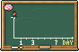

AprendaPsicologia / Como a memória funciona

Na década de 1880, Hermann Ebbinghaus descobriu que esquecemos informações novas rápido, boa parte em um dia, a menos que as revisemos.
Ponto-chave
Revisar nos momentos certos achata a curva do esquecimento.